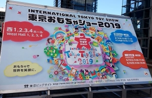

5/21-6/3 活動報告
子供から大人の時点でのおもちゃの役割を探すのは難しいため、
次にプレゼントされる時期を考えてみたところ、
成人した時・結婚した時・子供が生まれた時と考えることができた
前回までは乳幼児期のおもちゃの役割、成長段階によるおもちゃの扱いについて調査したが、
現在売られているおもちゃについて知らないため、市場調査も含めて東京おもちゃショー2019へ行ってみた

実際に展示されているものを見てみたところ、気づいたことが3点ある
・対象年齢が高くなるほど木製のおもちゃよりPT製のおもちゃが多い
・乳児期が過ぎたらキャラクターがあるものが人気になる
・大人向けのおもちゃはカードやパズル,懐かしいと思うもの,リアルなものであった
実際に商品を見て、子供の時はおもちゃであっても、大人になった時（もう一度渡されるとき）はおもちゃではなく使えるもののほうが良いとわかった
次は調べたことをもとにストーリーと案を考えてみる